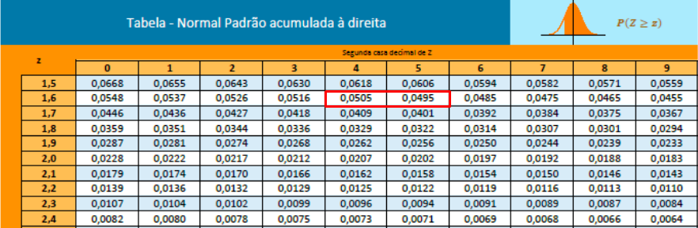

Introdução
“Uma moeda foi lançada 200 vezes e foram obtidas 127 coroas. Suspeita-se que a moeda seja desonesta para coroa, ou seja, o resultado coroa tem maior probabilidade de ocorrer. Verifique a desonestidade da moeda com no máximo 5% de chance de a conclusão ser errada.”
Exercícios como este são comuns quando queremos testar uma hipótese. Mesmo para aqueles que já têm familiaridade com o assunto, surgem várias perguntas ao olhar para o exemplo: “Por onde eu começo?” “Qual é a minha hipótese inicial?” “O que ele quer saber?” “Qual teste devo usar?”, entre outras. Este texto tem como objetivo servir de guia para simplificar a identificação e interpretação dessas questões, ajudando a saber exatamente o que fazer em cada situação.
Fundamentos do Teste de Hipótese
Definição de hipótese nula e alternativa
O primeiro passo em um teste de hipótese é definir as hipóteses nula e alternativa. Uma hipótese nula representada por \(H_0\) é a hipótese inicial ou a suposição padrão sobre uma situação. No caso da moeda mencionada anteriormente, a primeira ideia ao estar em contato com uma moeda é esperar que ela seja honesta. Portanto, neste caso, \(H_0 : P(c) = 0.5\) em que \(P(c)\) representa a probabilidade de se obter coroa.
A hipótese alternativa representada por \(H_1\) é aquilo que se suspeita ou deseja testar. No exemplo da moeda, suspeitamos que a moeda seja desonesta favorecendo o resultado coroa. Assim, a hipótese alternativa é formulada como \(H_1 : P(c) > 0.5\).
Escolha do teste estatístico
O segundo passo é escolher o teste estatístico adequado. Mario F. Triola em seu livro Introdução à Estatística disponibiliza uma tabela mostrando qual tipo de teste usar em cada caso:
| Parâmetro | Distribuição Amostral | Requisitos | Estatística de Teste |
|---|---|---|---|
| Proporção | Normal (Z) | np ≥ 5 e nq ≥ 5 | \[\begin{equation}z = \frac{\hat{p} - p_0}{\sqrt{\frac{p_0 (1 - p_0)}{n}}} \end{equation}\] |
| Média (σ desconhecido) | t-student | População normalmente distribuída ou n > 30 | \[\begin{equation} t = \frac{\bar{x} - \mu}{\frac{s}{\sqrt{n}}} \end{equation}\] |
| Média (σ conhecido) | Normal (Z) | População normalmente distribuída ou n > 30 | \[\begin{equation} z = \frac{\bar{x} - \mu}{\frac{\sigma}{\sqrt{n}}} \end{equation}\] |
| Desvio-padrão σ ou variância σ² | χ² | População normalmente distribuída | \[\begin{equation} \chi^2 = \frac{(n - 1)s^2}{\sigma^2} \end{equation}\] |
No exemplo da moeda, queremos estudar a proporção de coroas obtidas nos lançamentos. Portanto, o teste apropriado a ser utilizado é o teste z para proporções. Para garantir que este teste seja válido é essencial verificar se os requisitos do teste são atendidos.
Para um teste z de proporções precisamos assegurar que tanto \(np\) quanto \(nq\) sejam maiores ou iguais a 5:
- \(np\) representa o número esperado de sucessos em que \(n\) é o tamanho da amostra e \(p\) é a proporção esperada de sucessos (em nosso caso, a proporção esperada de coroas);
- \(nq\) representa o número esperado de fracassos em que \(q = 1 − p\).
No caso da moeda assumindo que ela é honesta a probabilidade de obter coroa é 0.5 e a probabilidade de obter cara é também 0.5.
Dado que a moeda foi lançada 200 vezes \((n=200)\):
\[\begin{equation} np = nq = 200 \times 0.5 = 100. \end{equation}\] Portanto, as condições \(np ≥ 5\) e \(nq ≥ 5\) são cumpridas. Isso confirma que podemos usar o teste z para proporções de forma válida neste caso.
\[\begin{equation} z = \frac{127/200 - 0.5}{\sqrt{0.5 \times (1-0.5) / 200}} \approx 3.81 \end{equation}\]Determinação do valor crítico
O valor crítico é um ponto de corte que nos ajuda a decidir se devemos rejeitar a hipótese nula. Ele é determinado pelo nível de significância (\(\alpha\)) do teste, que é a probabilidade máxima de cometer um erro do tipo I (rejeitar uma hipótese nula verdadeira).
Para um nível de significância de 5% (\(\alpha = 0.05\)), usamos tabelas de distribuição para encontrar o valor crítico correspondente. Existem dois tipos principais de testes estatísticos:
Testes Unilaterais
Um teste unilateral é usado quando a hipótese alternativa é direcionada, ou seja, espera-se que a estatística de teste seja significativamente maior ou menor que o valor da hipótese nula.
- Teste Unilateral à Direita: Usado quando a hipótese alternativa sugere que o parâmetro é maior que o valor da hipótese nula \[\begin{equation}H_1: \mu > \mu_0\end{equation}\]
- Teste Unilateral à Esquerda: Usado quando a hipótese alternativa sugere que o parâmetro é menor que o valor da hipótese nula \[\begin{equation}H_1: \mu < \mu_0\end{equation}\]
Testes Bilaterais
Um teste bilateral é usado quando a hipótese alternativa não é direcionada, ou seja, espera-se que a estatística de teste seja significativamente diferente (maior ou menor) do valor da hipótese nula.
- Teste Bilateral: Usado quando a hipótese alternativa sugere que o parâmetro é diferente do valor da hipótese nula \[\begin{equation}H_1: \mu \neq \mu_0\end{equation}\]
No exemplo da moeda usaremos um teste unilateral à direita, já que a hipótese alternativa é \(P(c) > 0.5\).

O valor crítico da distribuição normal padrão é aproximadamente 1.645.
Tomada de decisão
Se o valor resultante do teste for maior que o valor crítico rejeitamos a hipótese nula. No nosso caso como 3.81 > 1.645 rejeitamos a hipótese de que a moeda é justa. Portanto concluímos com um nível de significância de 5% que a moeda não é honesta.
Conclusão
Em resumo, os testes de hipótese seguem esse mesmo processo que envolve a definição das hipóteses, a escolha do teste estatístico adequado, o cálculo da estatística de teste, a determinação dos valores críticos e a tomada de decisão com base nesses valores. Este procedimento é feito para garantir que as conclusões tiradas a partir dos dados sejam válidas e confiáveis.
Independentemente do teste específico, o fundamental é compreender como aplicar a fórmula do teste correspondente e como encontrar os valores críticos apropriados nas tabelas estatísticas. Com essa compreensão, você poderá conduzir testes de hipótese em diferentes contextos e para diferentes parâmetros.